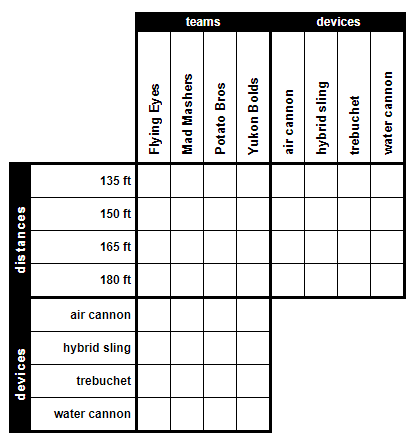
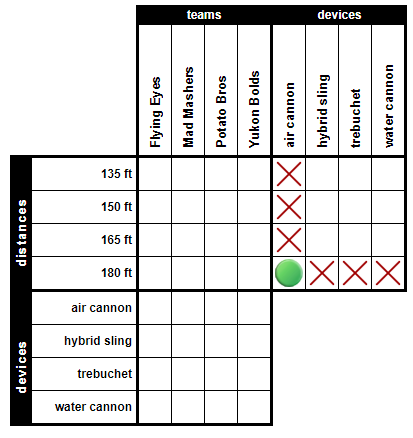
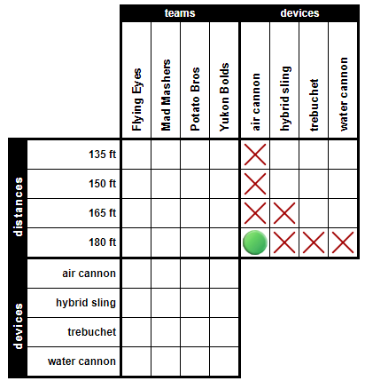
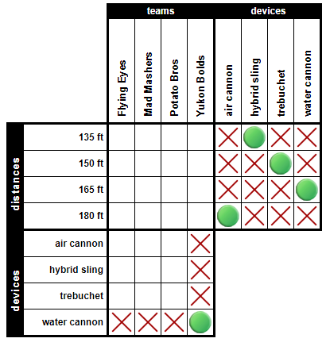
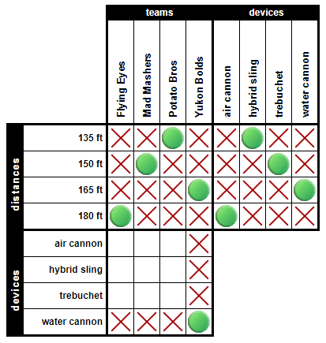
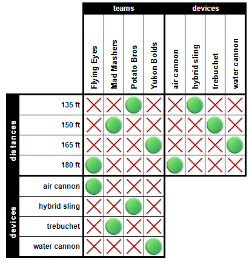

Lets Play Logic Problems
with Elliot Jane
STEP #1 - Fetched a Logic Puzzle from Logic Puzzles.org with a grid size of 3x4 - a Moderate difficulty range was used in the settings to attempt to best emulate the sample problems.

STEP#2 - Became familiar with the backstory and clues
STEP #3 - Skimed clues to see if there were any definitivly known facts
CLUE #2 - Plainly stated the air cannon fired 180ft

STEP #4 - Assimilated each clue into useful information
CLUE #1 - The Trebuchet was 15ft ahead of the hybrid swing and could be at either 180ft, 165ft, or 150ft. However, clue two narrowed the window down to either 165 or 150. Also, the hybrid sling cannot be set at 165ft.

CLUE #3 - Generated an array to track information. This clue, matriculated, gave the follow result:
[hybrid, teams, 135 | 150] less than [device, Flying Eyes, distances]
CLUE #4 - hybrid = 135ft | Yukon Bolds

CLUE #5 - Mad Mashers and Potato Bros must be next to each other when considering distance. Mad Masher is either at 180ft, 165ft, or 150ft
STEP #5 - Reviewed clues
CLUE #1 - hybrid distance = 135 + 15 = trebuchet distance = 150. All that remains is the conclusion that water cannon = 165ft

CLUE #2 - No new information has been provided here.
CLUE #3 - This updated clue has now provided a significant amount of new conclusions:
Flying Eyes has to be ahead in distance, and Mad Mashers and Potato Bros need to be next to each other. As only four slots remain the following conclusions can be made:
| 135ft = YB |
150ft = PB |
165ft = MM |
180ft = FE |
Now apply all the knowledge to our array and the following table is produced:
| Team |
Distance |
Device |
| Flying Eyes |
180 |
Air Cannon |
| Mad Mashers |
150 |
Trebuchet |
| Protato Bros |
135 |
Hybrid Sling |
| Yukon Bolds |
165 |
Water Cannon |
STEP #5
Apply table data to the Logic Problem board.

STEP #6
Submit data to test results
STEP #7
Celebrate logic solving itself.